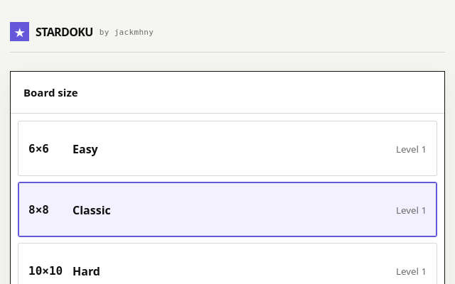
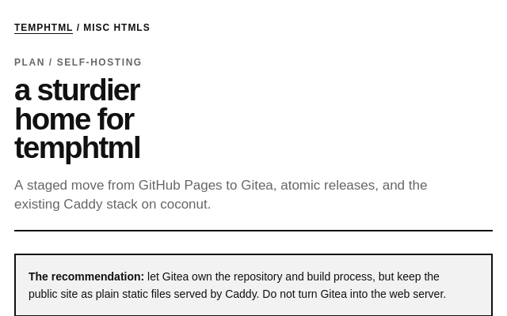
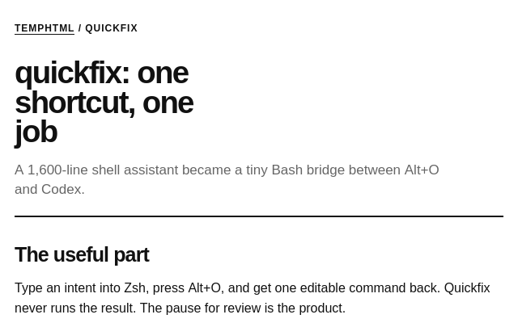
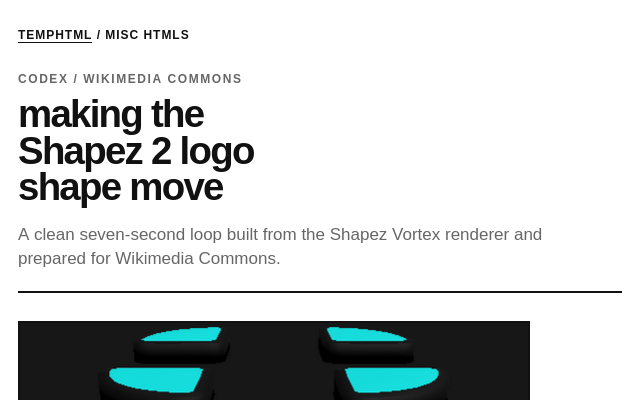
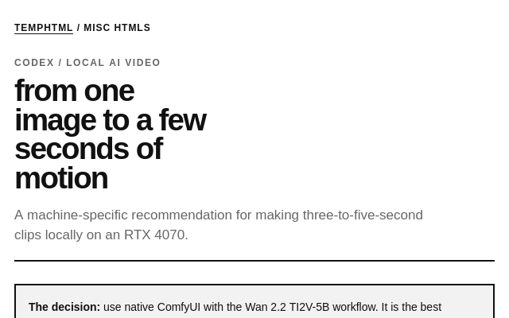
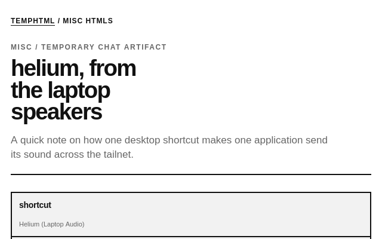

temphtml
agent scrapyard
pinned

stardoku Generated star puzzles with three board sizes, challenges, history, and replays.artifacts

temphtml on gitea A staged move from GitHub Pages to Gitea, Caddy, and atomic releases on coconut.
quickfix Quickfix cuts a sprawling shell assistant down to a fast, review-first shortcut.
shapez 2 logo animation Building this seven-second Shapez 2 logo animation for use on Wikimedia Commons.
local image to video Choosing a local image-to-video setup for an RTX 4070 with limited free storage.
helium laptop audio How one desktop shortcut sends Helium audio to laptop speakers across Tailscale.